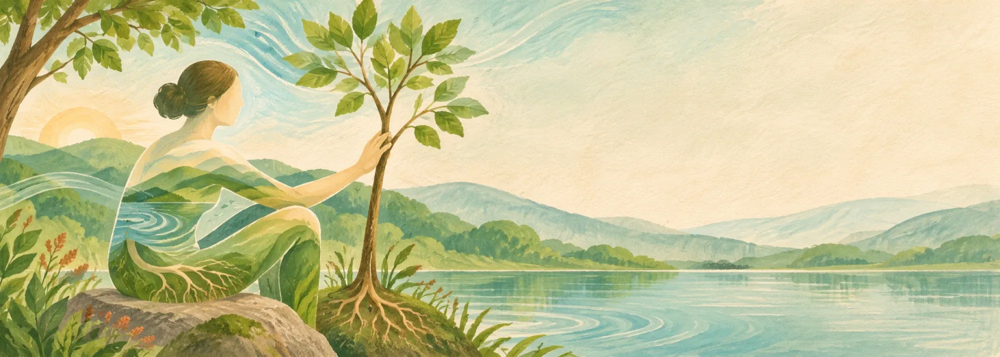

Экопсихология —
что природа делает с нами и мы с ней
Экопсихология началась как смелая идея: здоровье психики и здоровье планеты неразделимы. За три десятилетия вокруг неё выросло целое поле исследований — о том, как природа восстанавливает внимание и снимает стресс, какие чувства вызывает разрушение знакомых мест, почему мы знаем о кризисе и не действуем и что помогает. Здесь тринадцать главных тем этого поля, у каждой — понятие, авторы, ключевые исследования и честный взгляд на то, что подтвердилось.
Наука о связи,
которая рвётся
Слово «экопсихология» придумал в 1992 году историк и писатель Теодор Розак. Его тезис был прост и радикален: психология сто лет искала причины страдания в детстве, в семье, в обществе — и не заметила, что человек живёт ещё и на планете, с которой его связь разрушается. Здоровье психики и здоровье экосистем, по Розаку, — одна проблема, а не две.
Ранняя экопсихология была больше движением, чем наукой: в ней было много вдохновения и мало измерений. Но рядом уже работала психология среды со своими методами, и постепенно две линии сошлись. Сегодня «экопсихологией» в широком смысле называют всё поле, где психологи изучают отношения людей с природой — от лесных прогулок до климатической тревоги, от норм поведения до горя по утраченным местам.
Ниже — тринадцать тем, примерно в порядке появления. Первые описывают, что природа делает с нами; следующие — какие чувства вызывает её утрата; последние — что помогает действовать и восстанавливаться. У каждой темы есть «честный взгляд»: где данные надёжны, а где пока больше надежды, чем доказательств. Предыстория — классические школы психологии — собрана в первом подразделе, «Направления психологии».
Биофилия —
любовь к живому как наследство
Слово «биофилия» — любовь к живому — впервые использовал психоаналитик Эрих Фромм, противопоставляя её влечению к разрушению. Но знаменитой идею сделал биолог Эдвард Уилсон: он предположил, что тяга к живым существам и природным ландшафтам встроена в нас эволюцией. Почти вся история нашего вида прошла среди растений, животных и воды; за несколько поколений городской жизни эта настройка не могла исчезнуть.
Из гипотезы биофилии выросли биофильный дизайн — здания с естественным светом, растениями, видом на воду и зелень — и множество исследований предпочтений: люди в разных культурах в среднем выбирают ландшафты с водой, деревьями и открытым обзором.
Честный взгляд. Биофилия — скорее широкая рамка, чем проверяемая теория: трудно отделить врождённое от выученного, а природа вызывает у людей не только любовь, но и страх — змеи, пауки, тёмный лес. Надёжно другое: контакт с природой в среднем полезен психике, даже если эволюционное объяснение этого пока спорно.
→ Подробнее — программное эссе «Что происходит с нами, когда исчезает мир» и «Биомимикрия».
Экопсихология как движение —
психика и планета — одна проблема
Розак предложил понятие «экологического бессознательного» — глубинного чувства принадлежности к живому миру, которое подавляет индустриальная культура. Подавление, по его мысли, имеет цену: тревогу, пустоту, ненасытное потребление как попытку заполнить утраченную связь. Отсюда вывод: лечить человека, не возвращая его в отношения с природой, — всё равно что лечить симптомы.
Сборник 1995 года собрал терапевтов, философов и активистов. Из него выросли практики терапии на природе, работа с экологическим горем, идея, что забота о планете может быть источником смысла, а не только обязанностью.
Честный взгляд. Раннюю экопсихологию критиковали за романтизацию «естественного человека» прошлого и за слабую доказательную базу. Её главная заслуга — вопрос, а не ответы: она заставила психологов заметить, что у психики есть ещё и экологическое измерение. Ответы на этот вопрос потом нашли в основном исследователи, пришедшие из психологии среды.
→ Предыстория — подраздел «Направления психологии».
Восстановление внимания —
отдых без усилия
Опираясь на различение Уильяма Джеймса, Капланы описали два вида внимания: направленное, которое требует усилия и устаёт, и непроизвольное, которое захватывает само. Природа, по их теории, восстанавливает усталое направленное внимание, потому что мягко занимает непроизвольное: облака, листва, вода интересны, но не требуют напряжения. Восстанавливающая среда даёт ещё ощущение «ухода» от обыденного, протяжённость и совместимость с тем, чего человек хочет.
В известном эксперименте 2008 года люди после прогулки в парке справлялись с задачами на внимание и рабочую память заметно лучше, чем после прогулки по городской улице, — даже зимой. Похожие эффекты находили для вида из окна и даже для фотографий природы, хотя слабее.
Честный взгляд. Систематические обзоры подтверждают эффект для некоторых видов внимания, но не для всех, и величина его в разных исследованиях сильно различается. Многие эксперименты небольшие, а «природа» и «город» в них очень разные. Вывод осторожный, но устойчивый: короткое время в зелени помогает уставшей голове, и это дёшево.
→ Подробнее — «Лес как лекарство».
Снижение стресса —
тело отвечает раньше мыслей
Роджер Ульрих сравнил истории болезни пациентов после одинаковой операции: тех, чьи окна выходили на деревья, и тех, кто смотрел на кирпичную стену. Первые выписывались немного быстрее, получали меньше сильных обезболивающих и реже вызывали жалобы медсестёр. Позже Ульрих предложил теорию снижения стресса: природные сцены быстро, почти без участия сознания, успокаивают тело — замедляют пульс и снижают напряжение.
Японская практика синрин-йоку, «лесных ванн», дала этой теории полевые данные: в исследовании в 24 лесах прогулки снижали кортизол, давление и пульс по сравнению с городскими. Большое английское исследование 2019 года нашло порог: от 120 минут на природе в неделю люди заметно лучше оценивают своё здоровье и благополучие.
Честный взгляд. Физиологические эффекты реальны, но умеренны, а многие исследования не могут исключить простые объяснения: на прогулке в лесу люди ещё и двигаются, отдыхают и не смотрят в телефон. Порог «120 минут» — корреляция, а не доказанная доза. Природа здесь — хорошее дополнение к лечению, а не его замена.
→ Подробнее — «Лес как лекарство» и «Здоровье человека — это здоровье планеты».
Дефицит природы —
детство без леса
Энтомолог Роберт Пайл заметил, что исчезновение природы рядом с домом запускает порочный круг: дети, у которых нет «своего» дикого места, вырастают взрослыми, которым его не жалко, — и природы становится ещё меньше. Он назвал это «вымиранием опыта». Журналист Ричард Лоув в 2005 году дал похожему явлению запоминающееся имя — «дефицит природы» — и описал детство, проходящее в комнатах и машинах.
Книга Лоува запустила международное движение за возвращение детей на улицу: лесные детские сады, школы под открытым небом, школьные огороды. Обзор 2016 года собрал данные о том, что прямой опыт природы в детстве связан с более тёплым отношением к ней и с готовностью её защищать во взрослом возрасте.
Честный взгляд. «Дефицит природы» — культурная метафора, а не диагноз, и сам Лоув это подчёркивает. Связь детского опыта со взрослым поведением подтверждается в основном опросами взрослых о своём прошлом, где память ненадёжна. Но направление вывода устойчиво, а польза прогулок для детей не вызывает сомнений.
→ Подробнее — «Школа под открытым небом» и «Экологическая тропа у школы».
Связь с природой —
где проходит граница «я»
В начале 2000-х психологи научились измерять то, о чём раньше говорили философы глубинной экологии: насколько человек чувствует себя частью природы. Простейший тест — два круга, «я» и «природа», которые нужно расположить от «не пересекаются» до «почти совпадают». Более подробные шкалы спрашивают, чувствует ли человек родство с животными и растениями и думает ли о себе как о части большей системы.
Результат этих измерений — один из самых надёжных в поле: люди с сильным чувством связи с природой в среднем бережнее к ней относятся, больше поддерживают природоохранные меры и, что важно, чаще счастливее. Метаанализы находят здесь устойчивую умеренную связь, а не мимолётный эффект одного эксперимента.
Честный взгляд. Связь не означает причинность: возможно, бережные люди просто чаще бывают на природе. Но эксперименты, где связь с природой временно усиливали, показывают небольшой сдвиг и в отношении. Практический вывод прост: опыт природы — не роскошь, а одна из немногих вещей, которые действительно меняют отношение.
→ Подробнее — «Эволюция сознания — недостающее звено устойчивости».
Соластальгия —
тоска по дому, который рядом
Австралийский философ Гленн Альбрехт работал с жителями долины Хантер, где открытые угольные разрезы за несколько лет изменили знакомый ландшафт. Люди не уезжали из дома — но описывали чувство, похожее на ностальгию: дом перестал быть тем местом, которое их утешало. Альбрехт назвал это соластальгией — от латинского solacium, «утешение», и греческого algos, «боль».
Термин быстро вышел за пределы шахтёрских посёлков: соластальгию описывают после лесных пожаров, засух, наводнений, застройки любимых мест. В книге «Эмоции Земли» Альбрехт предложил целый словарь подобных чувств — и противоположных, от которых мог бы строиться положительный образ будущего.
Честный взгляд. Соластальгия — понятие, а не диагноз, и измерять её начали недавно; шкалы ещё разрабатываются. Её ценность в другом: она даёт имя переживанию, которое многие испытывают, но не умеют назвать, — и тем самым делает его разговором, а не одиночеством.
→ Личное эссе — «Соластальгия через одно место».
Экологическое горе —
скорбь, которой не было места
Эшли Кансоло годами слушала жителей посёлков на севере Канады, где тающий лёд и меняющиеся маршруты животных разрушали привычный образ жизни. Люди описывали горе — настоящую скорбь по утраченному льду, тропам, охоте, по знанию, которое больше не работает. В 2018 году Кансоло и Эллис предложили считать экологическое горе естественной реакцией на реальные утраты: видов, ландшафтов, будущего, которое казалось гарантированным.
Горе по природе долго считалось «неуместным»: его трудно разделить с другими, для него нет ритуалов, и окружающие часто не понимают, о чём речь. Психологи называют такое горе непризнанным — и именно поэтому особенно тяжёлым. Признание — первый шаг: группы поддержки, публичные церемонии прощания с ледниками, разговоры, где эта скорбь имеет право быть.
Честный взгляд. Исследования экологического горя в основном качественные — интервью и наблюдения, а не большие выборки. Но в них есть то, чего не хватает цифрам: голос людей, для которых изменение климата — не прогноз, а уже случившаяся утрата.
→ Подробнее — «Что происходит с нами, когда исчезает мир».
Экотревога —
тревога соразмерная угрозе
Экотревога — хроническое беспокойство о состоянии планеты и будущем. Её отличие от обычной тревоги в том, что её объект реален: изменение климата — не фантазия, а научно описанный процесс. Сьюзен Клейтон разработала первую шкалу климатической тревоги и показала, что у части людей она мешает спать, работать и общаться, а у большинства остаётся нормальной, даже полезной реакцией.
В крупнейшем исследовании 2021 года 59% молодых людей в десяти странах назвали себя очень или крайне обеспокоенными изменением климата, а 45% сказали, что эти чувства влияют на их повседневную жизнь. Многие связывали тревогу не только с климатом, но и с ощущением, что взрослые и правительства бездействуют.
Честный взгляд. Экотревога не считается болезнью и не входит в классификации расстройств — и большинство исследователей считают это правильным. Тревога, которая приводит к действию и разговору, адаптивна; помощь нужна тогда, когда она парализует. Лучше всего тревогу смягчает не утешение, а участие в посильном деле вместе с другими.
→ Подробнее — «Климатическая тревога — болезнь или здравомыслие?» и «Экологическая тревога у детей».
Психологическая дистанция —
почему далёкое кажется неважным
Изменение климата кажется далёким сразу в четырёх смыслах: во времени (последствия «потом»), в пространстве («где-то там»), социально («у других людей») и по неопределённости («может быть, обойдётся»). Исследования психологической дистанции показывают: чем дальше угроза по этим осям, тем абстрактнее мы о ней думаем и тем меньше готовы действовать.
Роберт Гиффорд собрал около трёх десятков психологических барьеров на пути к действию — «драконов бездействия»: от незнания и недоверия к экспертам до ощущения, что «я уже сделал достаточно», и страха показаться странным. Элке Вебер показала, что «резервуар тревоги» ограничен: когда волнует что-то близкое, климат вытесняется.
Честный взгляд. Простой рецепт «сделать угрозу ближе» работает не всегда: местные примеры повышают вовлечённость у одних людей и вызывают защиты у других. Надёжнее сочетание: конкретная близкая проблема плюс конкретное посильное действие.
→ Подробнее — блок «Почему мы знаем — и не делаем» на странице раздела и понятие «Гиперобъект».
Нормы и поведение —
мы делаем то, что делают другие
Роберт Чалдини различил два вида норм: описательные — что люди обычно делают — и предписывающие — что одобряется. В его экспериментах люди меньше мусорили на чистой улице и больше — на замусоренной, а табличка «большинство гостей этого номера используют полотенце повторно» работала лучше, чем призыв беречь природу.
Отсюда выросли отчёты, которые сравнивают потребление энергии домохозяйства с соседским. Уэсли Шульц нашёл любопытную деталь: дома, которые тратили меньше среднего, после сравнения начинали тратить больше — «эффект бумеранга». Его снимал простой знак одобрения — улыбающийся смайлик рядом с хорошим результатом. В масштабах миллионов домов такие отчёты снижают потребление на несколько процентов.
Честный взгляд. Эффекты норм реальны, но обычно небольшие и могут ослабевать со временем; кроме того, сообщение «многие так делают» опасно, если на самом деле многие делают плохое. Нормы — не замена правилам и инфраструктуре, а их усилитель.
→ Подробнее — «Никто не спасает планету в одиночку» и «Основы социологии».
Благоговение —
маленькое «я» перед большим миром
Келтнер и Хайдт описали благоговение как чувство, которое возникает перед чем-то огромным и не умещающимся в привычные рамки: горами, звёздным небом, старым лесом, грозой. Его главный психологический эффект — «маленькое я»: собственные заботы на время теряют вес, а внимание обращается к миру и другим людям.
В одном из экспериментов Пола Пиффа студенты, которые минуту смотрели вверх на рощу высоких эвкалиптов, затем охотнее помогали незнакомцу, чем те, кто смотрел на высокое здание. Другие исследования связывают благоговение с меньшим эгоцентризмом и большей щедростью — то есть с тем самым расширением круга заботы, о котором писали гуманистические психологи.
Честный взгляд. Многие эксперименты о благоговении небольшие, и часть эффектов не удалось воспроизвести. Но сама идея проста и правдоподобна: природа учит соразмерности, а соразмерность — основа бережности.
→ Подробнее — «Как менялась космологическая картина мира» и «Как устроен лес: подземная сеть».
Терапия на природе и работа с отчаянием —
от боли к действию
Практическая ветвь экопсихологии соединяет две линии. Первая — природа как помощь: лесные ванны, садовая терапия, терапевтические походы, программы, где врачи «назначают» волонтёрство в парке или огороде. Вторая — работа с чувствами о кризисе: группы, где экологическую тревогу и горе можно прожить, а не прятать.
Джоанна Мэйси начала эту работу ещё в 1980-х, в разгар страха перед ядерной войной. Её «Работа по воссоединению» ведёт участников по спирали: благодарность — признание боли за мир — новый взгляд — шаг вперёд. В книге «Активная надежда» она описала надежду не как ожидание хорошего исхода, а как практику: выбирать то, на что надеешься, и делать для этого то, что можешь.
Честный взгляд. Доказательная база терапии на природе растёт, но многие программы оценены слабо, без контрольных групп. Групповая работа с отчаянием изучена ещё меньше. Её ценность подтверждают скорее участники, чем эксперименты, — и это стоит честно признавать.
→ Подробнее — «Лес как лекарство», «Лесной активизм» и практики на странице раздела.
От вдохновения
к доказательствам — и обратно
Тринадцать тем складываются в простую дугу. Природа действует на нас: восстанавливает внимание, снимает стресс, учит соразмерности. Её утрата ранит: соластальгия, горе, тревога — не слабость, а нормальные реакции на реальные потери. А между знанием и действием стоят предсказуемые барьеры — дистанция, нормы, защиты, — и с ними можно работать.
Экопсихология прошла путь от смелого манифеста к полю исследований с методами, шкалами и метаанализами. По дороге многие красивые обещания стали скромнее, а несколько выводов — прочнее. Самый прочный из них поразительно прост: люди, которые чувствуют себя частью природы, бережнее к ней относятся, и это чувство растёт от опыта.
Предыстория этих тем — в первом подразделе, «Направления психологии». Что из этого можно сделать уже сегодня — в практиках на странице раздела «Психология».
Связь с миром — не чувство, которое у нас есть, а опыт, который мы растим.